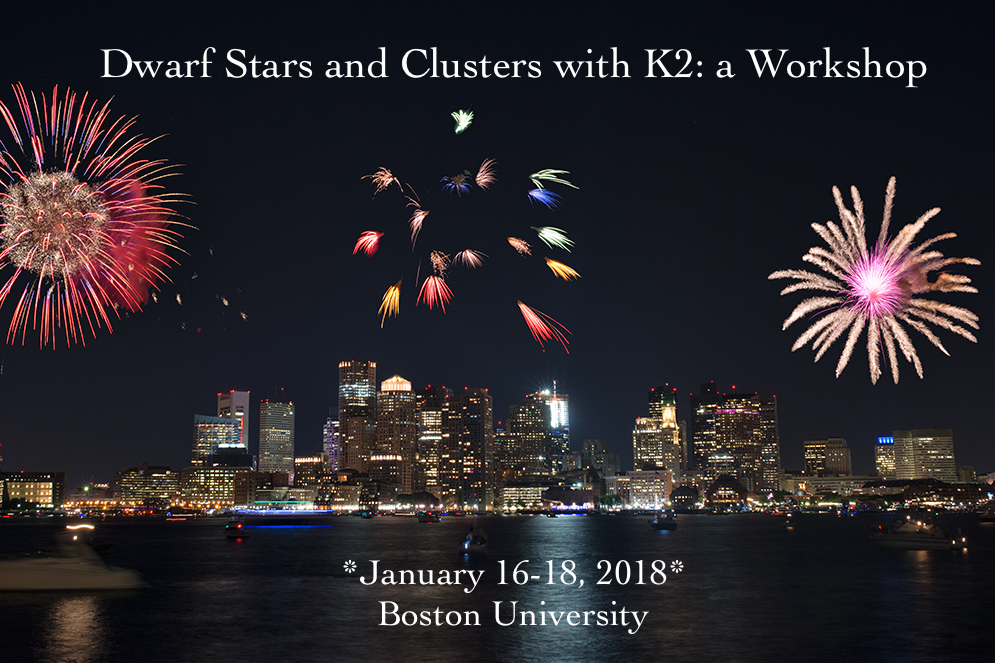
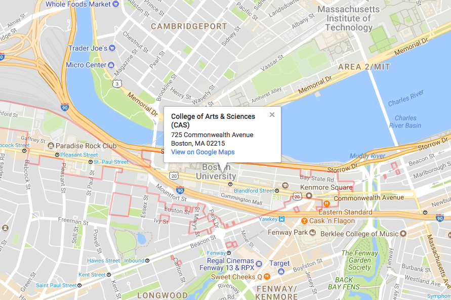

 Image Credit: Eric Kilby
Summary
The K2 Mission and Boston University will host a Dwarf Stars and Clusters Workshop on Jan 16-18, 2018, at BU in Boston, Massachusetts.
Since its launch in 2009, the Kepler telescope has been providing high precision photometric time series on half a million targets, from exoplanet hosts to active dwarf stars. With its focus on the ecliptic plane, the K2 Mission has further expanded science opportunities, especially in the area of stellar clusters and magnetic activity. By the end of 2017, K2 will have observed more than 15 open clusters and associations, some on more than one occasion. The resulting data have enabled ground-breaking research on a number of topics, including gyrochronology, stellar rotation and activity, planet occurrence rates, young stellar objects, and eclipsing binary systems. Astronomers working in these areas are warmly invited to gather for discussion at BU this coming January.
The motivations for this workshop include:
- Summarizing the science done to date with K2 in the area of cool stars, star formation regions, and open clusters.
- Forging new collaborations for future science with K2.
- Exploring synergies with other space missions (especially TESS), wavelength regions, and science areas.
Draft Agenda
This will be a small workshop with time for most participants to give a short overview of their research during the first two days. Talks are 10 minutes each, plus 5 minutes for questions. (There will not be any posters.) We have reserved the final morning for "unconference" activities, including data how-to's and high-level science product creation overviews. We will also encourage participants to spend time comparing technical approaches to K2 data, including photometry.
Tuesday, Jan 16th
| 09:15–10:00 | Coffee & snacks |
|---|---|
| 10:00–10:30 |
Opening session
|
| 10:30–11:30 |
Science talks: Stellar rotation
|
| 11:30–12:00 | Unconference day overview |
| 12:00–13:30 | Lunch |
| 13:30–14:45 |
Activity and flares
|
| 14:45–15:30 | Coffee |
| 15:30–17:00 |
Transiting planets
|
Wednesday, Jan 17th
| 9:30-10:00 | Coffee & snacks |
|---|---|
| 10:00-11:15 |
Eclipsing binaries and companions
|
| 11:15–12:00 |
Unconference pitches |
| 12:00–13:30 | Lunch |
| 13:30–15:00 |
Young Stellar Objects
|
| 15:00–15:30 | Coffee |
| 15:30–17:00 |
Non-main-sequence stars and synergies with other missions
|
Thursday, Jan 18th
Unconference Day
| 09:00–09:15 | Coffee & snacks |
|---|---|
| 9:15–9:30 |
Conference summary & unconference plans |
| 9:30-10:30 |
Unconference session 1 |
| 10:30-11:30 |
Unconference session 2 |
| 11:30-12:30 |
Unconference session 3 |
| 12:30-13:00 |
Wrap-up & unconference reports |
| 13:00-14:00 |
Lunch |
| 14:00-17:00 |
Unstructured time for collaboration |
Venue
The workshop will take place on the Boston University campus, primarily at the College of Arts and Sciences.

The nearest airport is the Boston Logan International Airport. We recommend using the MBTA system, which provides public transportation from the airport.
For those that wish to drive to campus, there should be parking available at the Granby Lot, 665 Commonwealth Ave or the Kenmore Lot, 549 Commonwealth Ave., at a cost of $17 per day. If these are full, there are other parking options available. Attendants at the Granby and Kenmore Lots can offer directions.
Accommodation
There is no on-site accommodation available for this meeting, but we can recommend the following nearby hotels:
-
The Hyatt Regency Cambridge is just across the river and walkable (at most 15 minutes) and has rooms for approximately $150-200/night + tax.
-
Hotel Buckminster is on the BU side of the river, in Kenmore Square. Prices range from $110-150/night + tax.
-
Hotel Commonwealth is also in Kenmore Square, but a bit more pricey.
-
Students on a budget may want to check out the hostel in central Boston.
-
For other options, check out hotels on the B or C Green Lines, such as the Holiday Inn Boston-Brookline (about 20 minutes' ride).
Organizing Committee
- Ann Marie Cody (K2 GO Office)
- Philip Muirhead (Boston University)
- Geert Barentsen (K2 GO Office)
- Michael Gully-Santiago (K2 GO Office)
- Christina Hedges (K2 GO Office)
- Julie Skinner (Boston University)
- Jessie Dotson (K2 Project Scientist)
Participant registration list
(Last update: Dec. 7, 2017)
- Marcel Agüeros (Columbia University)
- Ruth Angus (Columbia University)
- Nuralfin Anripa (State Islamic University of Maulana Malik Ibrahim)
- Geert Barentsen (NASA Ames)
- Phillip Cargile (Harvard CfA)
- Giovanni Carraro (University of Padova)
- Ann Marie Cody (NASA Ames)
- Paul Dalba (Boston University)
- Trevor David (JPL)
- Stephanie Douglas (Harvard CfA)
- Lauren Doyle (Armagh Observatory)
- Rebecca Esselstein (Oxford University)
- Nancy Evans (Harvard CfA)
- Adina Feinstein (Tufts University)
- Edward Gillen (University of Cambridge)
- John Gizis (University of Delaware)
- Natalie Gosnell (Colorado College)
- Michael Gully-Santiago (NASA Ames)
- Zhen Guo (Peking University)
- Kevin Hardegree-Ullman (University of Toledo)
- Joel Hartman (Princeton University)
- Christina Hedges (NASA Ames)
- JJ Hermes (University of North Carolina Chapel Hill)
- Ekaterina Ilin (Potsdam)
- Kenneth Janes (Boston University)
- Rob Jeffries (Keele University)
- Kathleen Kraemer (Boston College)
- Adam Kraus (University of Texas Austin)
- David Latham (Harvard CfA)
- Emily Leiner (University of Wisconsin)
- Fatima Mammadova (Istanbul University)
- Andrew Mann (Columbia University)
- Robert Mathieu (University of Wisconsin Madison)
- Søren Meibom (Harvard CfA)
- Philip Muirhead (Boston University)
- Domenico Nardiello (University of Padova)
- Jose-Dias do Nascimento (Harvard CfA)
- Elisabeth Newton (MIT)
- Srinitha Nimmakayala (Universidad Complutense de Madrid)
- Prajwal Niraula (Wesleyan University)
- Luisa Rebull (IPAC/Caltech)
- Alvaro Ribas (Boston University)
- Joey Rodriguez (Harvard CfA)
- Philip Rosenfield (Harvard CfA)
- Sheila Sagear (Boston University)
- Eric Sandquist (San Diego State University)
- Joshua Schlieder (NASA GSFC)
- Avi Shporer (MIT)
- Julie Skinner (Boston University)
- Melinda Soares-Furtado (Princeton University)
- Patrick Tamburo (Boston University)
- Andrew Vanderburg (University of Texas)
- Mark Veyette (Boston University)
- Elaine Winston (Harvard CfA)
- Scott Wolk (Harvard CfA)
Registration
Registration is now open! There is no fee to attend. Coffee breaks are sponsored by the Institute for Astrophysical Research at Boston University.
Please sign up to attend and indicate your interest to give a short talk. The final date to register for a talk will be November 22, 2017.